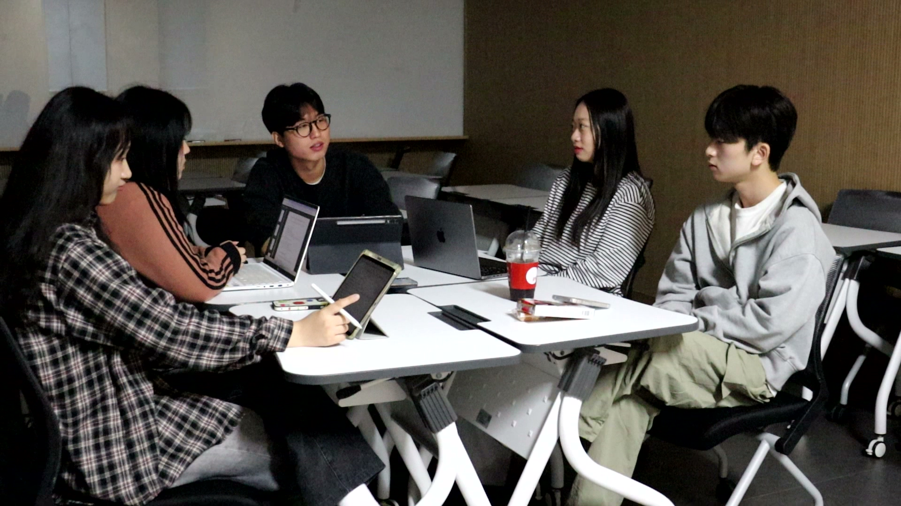
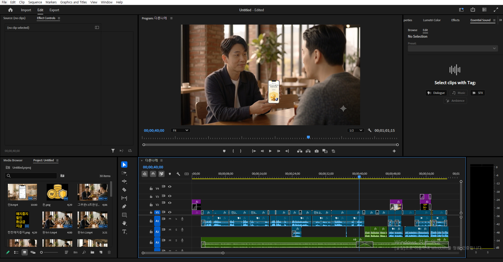
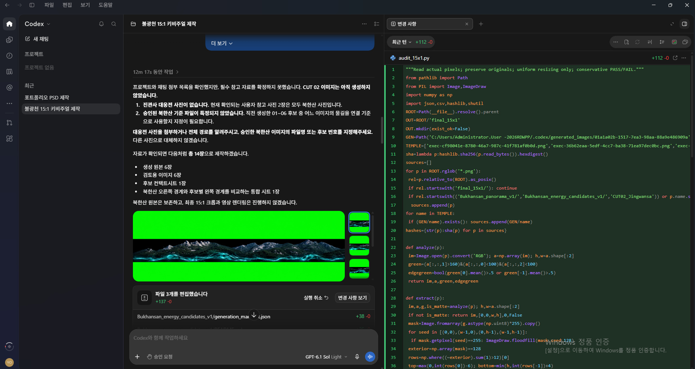

소중한 Z폴드8 수리비 걱정 끝, 카카오와 함께 5년 안심.
재생시간 60초
기존 통신사·제조사 보험의 비싼 비용과 복잡한 절차에 지친 유저를 타깃으로 기획했습니다. 직관적인 인포그래픽 모션으로 압도적인 가격 경쟁력과 간편한 가입 경험을 속도감 있게 전달합니다.
기획부터 촬영, 편집, AI 워크플로우까지.

타깃 분석과 목적에 맞춰 러닝타임과 예산까지 고려한 현실적인 제작 안을 설계합니다. 한정된 제작 환경 안에서도 메시지를 가장 효과적으로 전달할 최적의 연출 방식을 찾아냅니다.
미러리스부터 방송용 장비까지 능숙하게 다루며, 오디오 수음과 현장 데이터 백업까지 안정적으로 관리합니다. 방송부와 영상 학회 활동을 거치며 쌓은 노하우로 현장 흐름을 파악하고 안정적인 컷을 담아냅니다.

Premiere Pro와 After Effects를 중심으로 컷 편집부터 그래픽 합성까지 호흡에 맞게 조율합니다. 포토샵 기반 리터칭은 물론, 최근에는 생성형 AI 기술을 접목해 컷의 완성도와 작업 속도를 끌어올립니다.

빠르게 업데이트되는 최신 AI 모델을 지속적으로 모니터링하고 실무 파이프라인에 빠르게 테스트합니다. 콘셉트 이미지 추출부터 영상 생성, 업스케일 및 후반 보정까지 목적에 맞는 툴을 유연하게 활용합니다.
Technical Video Producer & AI Specialist
방송부 활동과 문화콘텐츠학을 전공하며 단순한 촬영과 편집을 넘어, 콘텐츠의 구조를 분석하고 기획하는 시각을 다져왔습니다.
현장 경험을 바탕으로 작업의 한계를 줄이고자 새로운 기술과 AI 툴을 실무 파이프라인에 적극적으로 도입해 활용하는 편입니다.
막연한 아이디어에 그치지 않고 기술적인 구현 가능성을 면밀히 따져, 목적에 부합하는 결과물을 안정감 있게 완성해 냅니다.